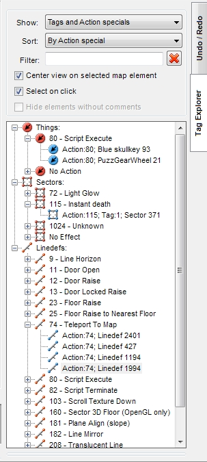

| 标签浏览器（Tag Explorer）插件可让你查看所有分配了标签和/或动作/效果（Action/Effect）的物件、扇区和线段。它还可以让你查看所有与多面体（Polyobject）相关的物件和线段。它支持按标签、效果或多面体编号进行筛选。如果当前地图为 UDMF 地图格式，它还可以让你编辑物件、扇区和线段的注释，并按注释搜索项目。 用法： 右键单击某个项目可打开编辑菜单。 双击某个项目可编辑其注释（仅限 UDMF）。删除注释文本即可清除注释。 特殊筛选选项： 输入 "#" + 标签编号 可仅显示具有该标签的元素。示例：输入"#12"可显示标签为 12 的元素。 输入 "$" + 效果或动作编号 可仅显示具有该效果或动作的元素。示例：输入"$9"可显示具有"Line Horizon"效果的元素。 输入 "^" + 多面体编号 可按多面体编号进行筛选。 |
 |